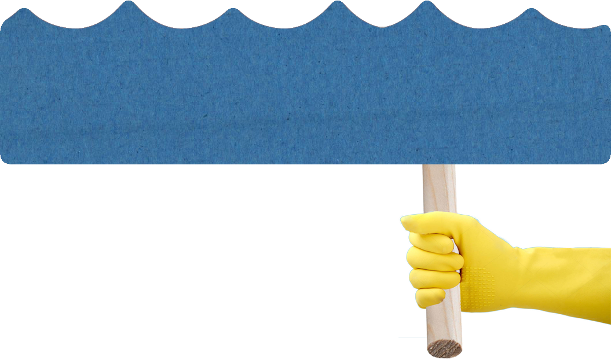
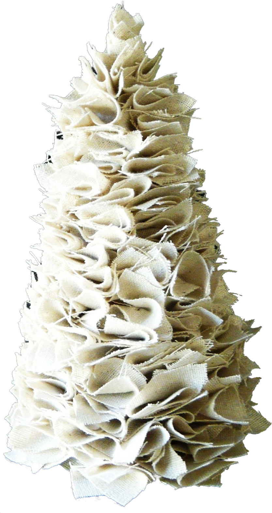
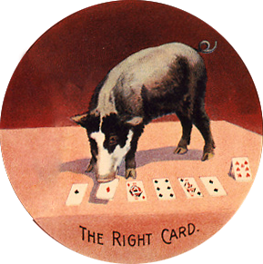
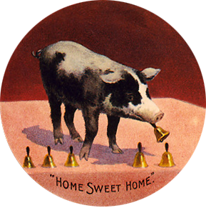

Say, it's only a paper moon
Sailing over a cardboard sea
But it wouldn't be make believe
If you believed in me
Yes, it's only a canvas sky
Hanging over a muslin tree
But it wouldn't be make believe
If you believed in me
Without your love
It's a honky tonk parade
Without your love
It's a melody played in a penny arcade
and Bailey world
Just as phony
 as it can be
But it wouldn't be make believe
If you believed in me